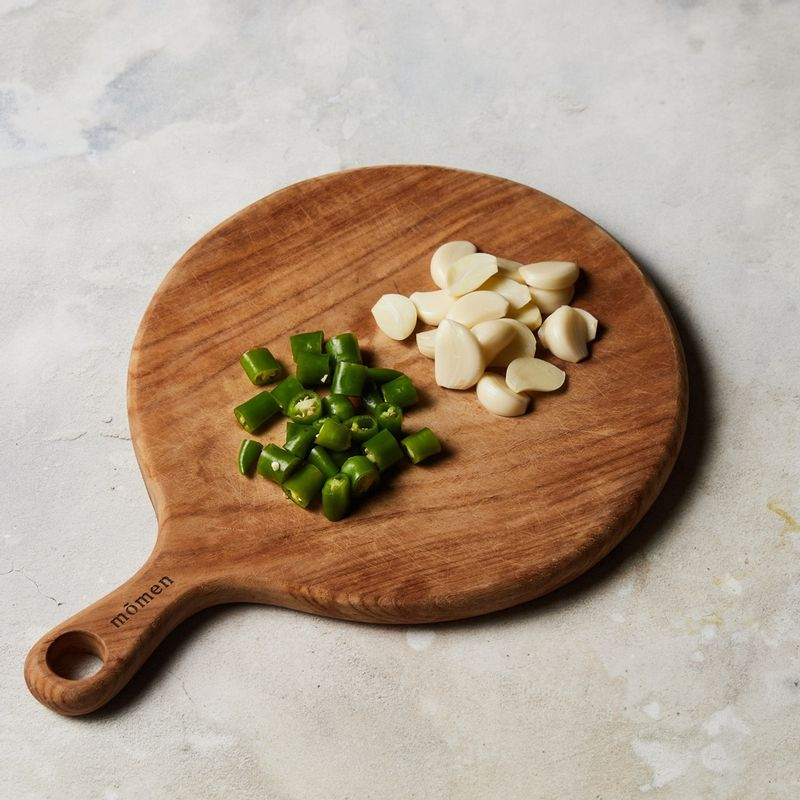

-
닭 근위는 물에 깨끗이 씻어 먹기 좋게 썰어주세요.
-

마늘은 반으로 자르고 청양고추는 도톰하게 썰어주세요.
-

팬에 기름을 넣고 9단에서 3분간 예열해 주세요.
-
끓는 기름에 물기를 제거한 닭근위를 넣고 7단에서 2분 30초간 튀겨주세요.
(tip. 기름과 수분이 만나 튀길 수 있으니 신문지나 튀김 뚜껑으로 덮어주세요)
-
마늘과 고추를 넣고 7단에서 1분 30초간 더 튀겨주세요.
-
채반에 올려 기름을 빼고 맛소금, 후추를 뿌려 7단에서 1분간 볶아주세요.
-
완성된 닭똥집 마늘볶음을 접시에 담고 참기름, 통깨를 뿌려 맛있게 즐겨주세요.